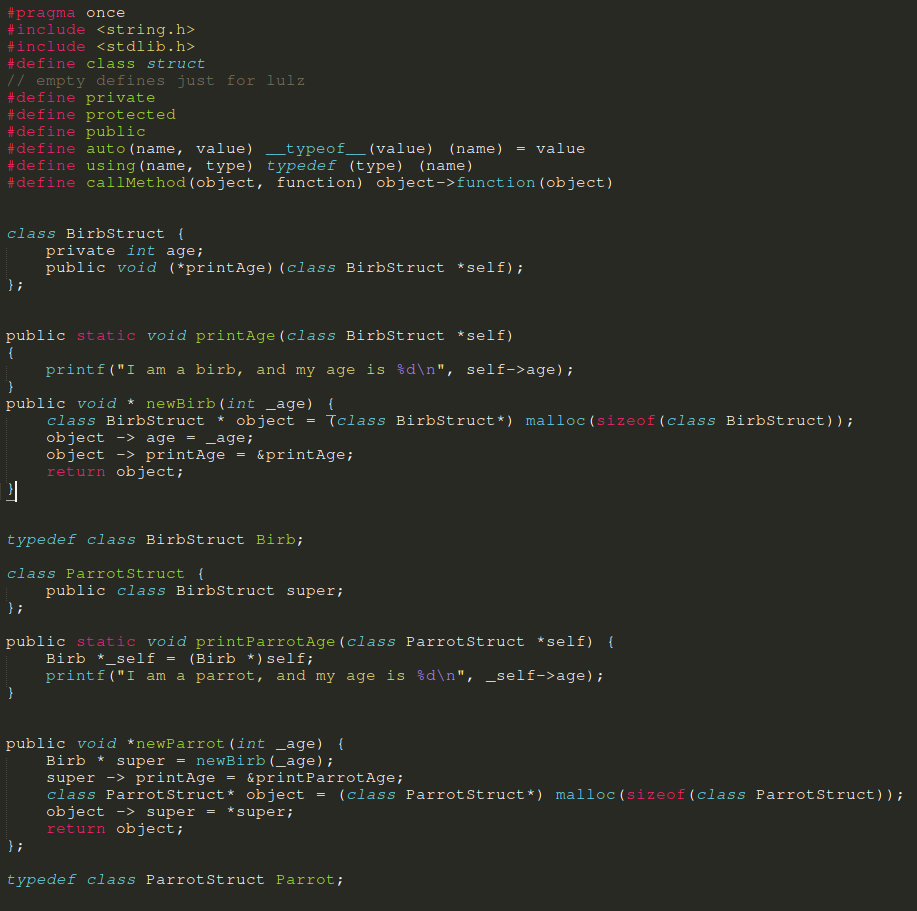

This shit is a joke attempt at implementing some very basic class and object semanthics, including inheritance and polimorphism, in an example C program. It is awful, and should never be used in any real project. It has no type safety, it is very easy to break, and you could easily introduce segfaults in it. But, it kinda works. Wait, doesn't that literally describe the C language in the first place?
You might be wondering: why I made this? The answer is simple. For I am moved by macabre curiosity and a strong desire to see chaos and destruction. And the easiest way to achieve that, is to mess around with C.
The trick is actually very simple. We implement classes as a normal C struct that has function pointers inside of it, for the "methods". We implement constructors for it, that constructs the objects and returns them as a void*, which allows us to use inheritance stuff like declaring an object of the superclass and instantiating it as an object of the subclass.
All methods of a certain class must receive a pointer to the very same object as a parameter. Languages like python do that in an implicit form, by using "self". C isn't that smart. However, we do have a convenient macro to call methods without having to pass that parameter.
Oh, and by the way, there's no destructor implemented yet. We leak memory for greater good
But don't get your hopes high, you still have to check it manually, so the risk of segfault stands. What we now have is some sort of identifier you can assign to each class, such as an element of an enum (which is what I did on the example)
With that, you can manually check the type of an object before potentially calling some method you shouldn't... Well, you shouldn't be using this code in the first place so this doesn't matter.